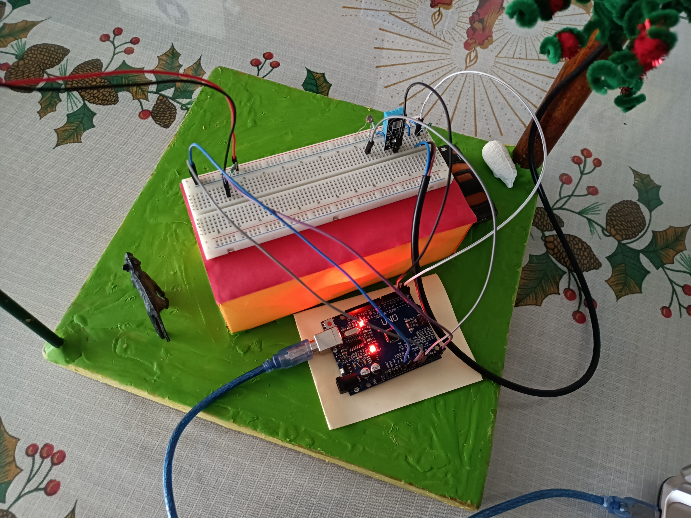

inicio
Programa
Prototipo
Tutorial
Contacto
¿Quienes somos?
Registro
Soporte del Anemómetro con el LDR para contar las interrupciones(RPM)
Soporte donde las copas reciben el viento para dar las revoluciones
Soporte de la veleta donde está el sistema de direccionamiento
Sistema de direccionamiento por medio del LDR en el cual hay distintas intensidades
"Arduino" y "Protoborad en el cual se carga el codigo y se alimenta de energía del equipo de cómputo

Prototipo final
A continución le mostraremo los resultados de la captación de los datos
muestra 1
muestra 2
Muestra 3